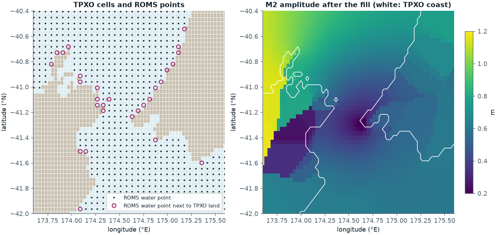
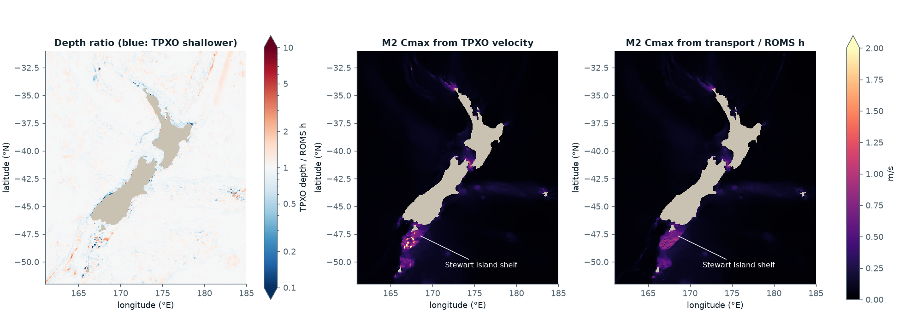
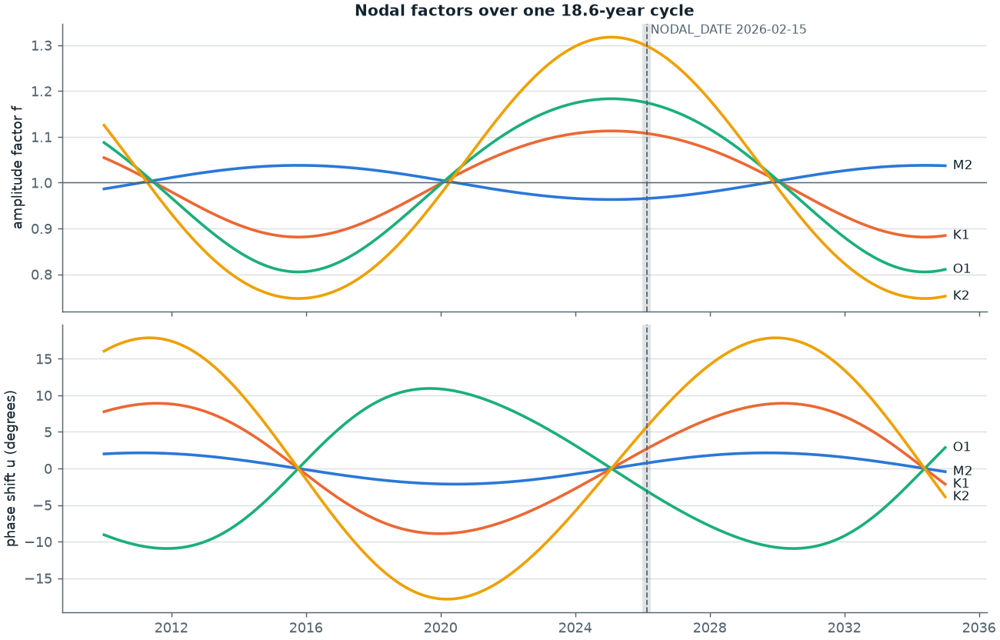
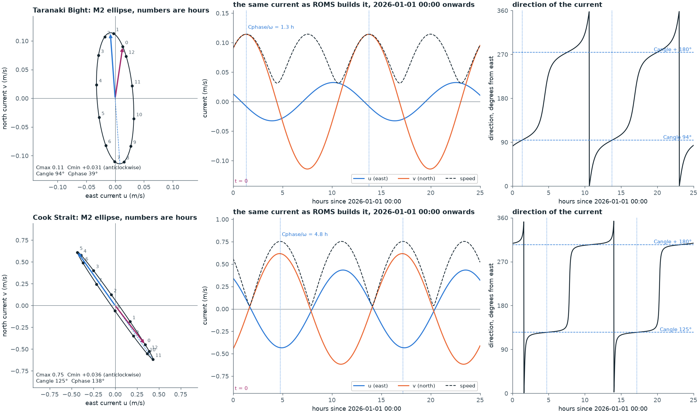
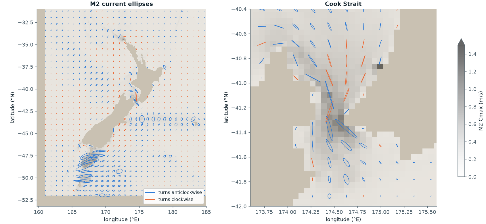
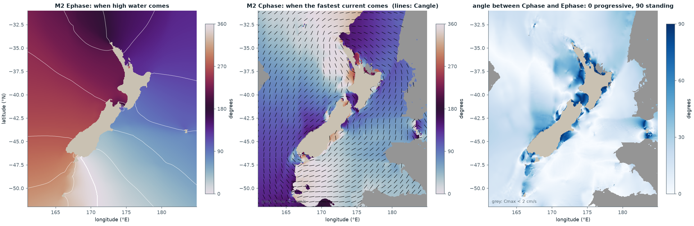
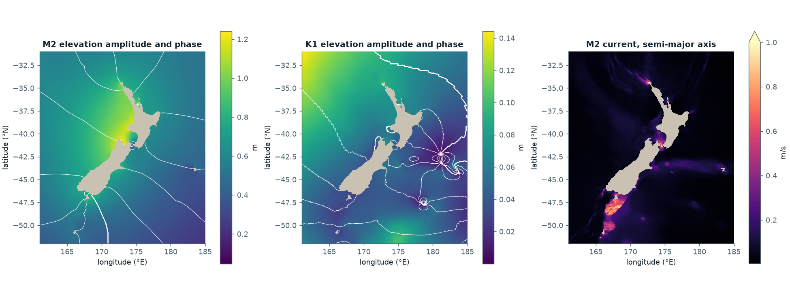
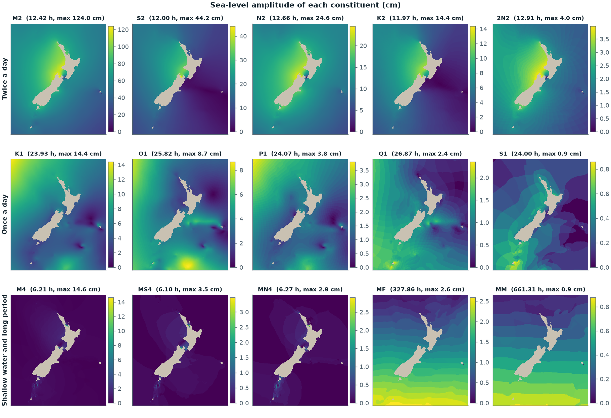
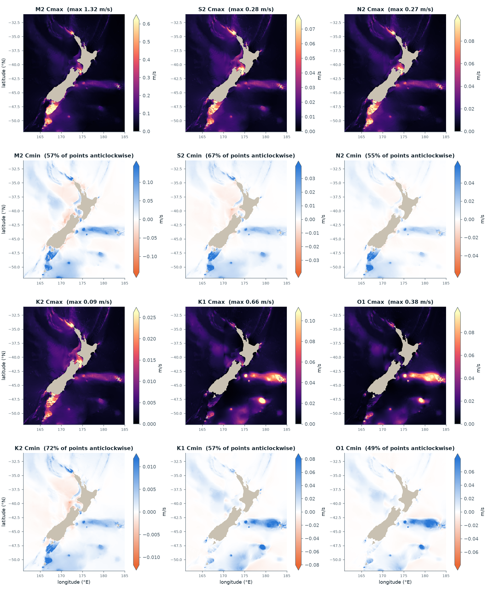
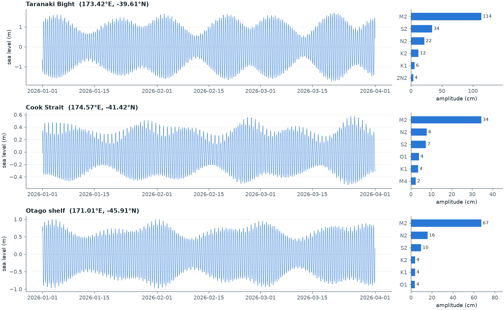

A step-by-step guide to make_tides.py. It takes the TPXO global tide model and turns it into the tide forcing file (TIDENAME) that ROMS reads. For every step we say what the code does, why it needs to, and the mathematics behind it, with figures made from the real Moana files.
The Moon and the Sun pull on the ocean with a few fixed rhythms. The biggest one, called M2, repeats every 12.42 hours (the Moon passes overhead about twice a day). Others repeat every 12 hours (S2, the Sun), about every 24 hours (K1, O1), and so on. Each rhythm is called a tidal constituent.
The period of each constituent is the same everywhere on Earth, because it comes from astronomy. Two things change from place to place:
Amplitude \(A\): how high the wave is at that place (in metres for sea level, m/s for current).
Phase \(\phi\): when the high water of that wave arrives, given as an angle from 0° to 360°.
If you know the amplitude and phase of each constituent at a point, you can rebuild the tide there at any time by adding the waves together. This is exactly the sum ROMS computes:
$$\zeta(t)=\sum_{k=1}^{15} E_k\,\cos\!\big(\omega_k\,t-\varphi_k\big),\qquad \omega_k=\frac{2\pi}{T_k}$$
\(\zeta\) is sea level, \(E_k\) the amplitude (tide_Eamp), \(\varphi_k\) the phase (tide_Ephase), \(T_k\) the period (tide_period) and \(t\) the time since the phase-zero date (step 3). The nodal factor \(f_k\) of step 3 is already inside \(E_k\).
Illustration only, not Moana data: M2 with amplitude 1.0 m and S2 with amplitude 0.35 m, both phase 0. The magenta line is S2 alone. Their sum (dark line) gives big tides when the two waves line up (spring tide) and small tides when they cancel (neap tide), every 14.8 days. The real Moana version of this is in the result.
TPXO (here TPXO9-atlas-v5, from Oregon State University) is a global tide model that has already worked out the amplitude and phase of each constituent, for sea level and for currents, on a 1/30° grid (about 3 km). ROMS cannot read TPXO as it is. It needs the same information on its own grid, with phases measured from its own clock, and with currents written as ellipses. make_tides.py does that translation. It is a Python version of the MATLAB OTPS scripts in Code-Commons (process_tides_GOG.m → otps2frc_v7.m), with pyTMD in place of t_tide and xarray in place of the OTPS program extract_HC.
The TPXO input as it comes from DataMesh, on its own grid. Left: M2 amplitude. Right: TPXO water depth. The magenta line is the edge of the ROMS grid. The TPXO box is a little bigger than the ROMS grid on every side, so every ROMS point has TPXO cells around it.
Why TPXO stores sea level as a real and an imaginary part
TPXO does not store amplitude \(A\) and phase \(G\) directly. It stores each constituent as one complex number \(z\), whose size is the amplitude and whose angle is minus the phase:
$$z = A\,e^{-iG} = \underbrace{A\cos G}_{\texttt{hRe}} \;-\; i\,\underbrace{A\sin G}_{-\texttt{hIm}},\qquad A=|z|,\qquad G=-\arg z$$
The minus sign is the TPXO/OTIS convention: \(G\) is a phase lag. With it, the sea level of that constituent is \(\zeta(t)=\operatorname{Re}\!\big(z\,e^{i\omega t}\big)=A\cos(\omega t-G)\).
The reason is that a phase is an angle, and angles cannot be added or averaged like ordinary numbers. Halfway between 350° and 10° is 0°, but the plain average is 180°. The complex number has no such jump: averaging \(e^{-i350°}\) and \(e^{-i10°}\) gives a number at angle 0°, as it should. So every operation that mixes neighbouring values (interpolation) or shifts the clock (step 3) is done on \(z\), and amplitude and phase are read off only at the very end (step 5). The script keeps sea level and both current parts in this complex form until step 4.
The numbers on the boxes are the step numbers in the script. Everything stays complex until step 4.
1
Read the ROMS grid
scripts/make_tides.py:31–36
grid = xr.open_dataset(GRID)
water = grid.mask_rho.values == 1
lon = xr.DataArray(grid.lon_rho.values % 360, dims=("eta_rho", "xi_rho"))
lat = xr.DataArray(grid.lat_rho.values, dims=("eta_rho", "xi_rho"))
h = xr.DataArray(grid.h.values, dims=("eta_rho", "xi_rho"))
What
Opens the ROMS grid file moana_grid_N50.nc.
Keeps the water mask, the longitude and latitude of every rho point, and the ROMS depth h.
Writes longitudes in the 0–360° form (% 360), so 179°W becomes 181°.
Why
The rho points are where ROMS wants the tide values. The mask is used at the end to set land to zero. h is needed to turn TPXO transport into current (step 2d).
The Moana domain crosses the 180° line (it runs to 185°E). The TPXO cut runs from 160° to 186°, so ROMS points east of 180° must also be written as 180°–186°. If not, they would fall outside the TPXO box. The current grid file already uses 0–360°, so here % 360 is only a safety step.
2
Move the TPXO harmonics onto the ROMS grid
scripts/make_tides.py:38–53
tpxo = xr.open_dataset(TPXO).sel(con=CONSTITUENTS)
def harmonics(var, scale=1.0):
hc = (tpxo[var + "Re"] + 1j * tpxo[var + "Im"]) * scale
i, j = distance_transform_edt(np.isnan(hc[0]), return_distances=False, return_indices=True)
hc = hc.copy(data=hc.values[:, i, j]) # each land cell takes its nearest water cell
return hc.interp(lon=lon, lat=lat).drop_vars(["lon", "lat"])
z = harmonics("h")
u, v = harmonics("u", tpxo.dep) / h, harmonics("v", tpxo.dep) / h
2a. Pick the constituents and make complex numbers
What
Selects the 15 constituents in CONSTITUENTS and joins each Re/Im pair into one complex number per constituent \(k\) and per TPXO cell:
We use all 15 that TPXO gives (the MATLAB version used 12). From here on, every operation acts on \(z\), \(u\) and \(v\) as complex numbers, so amplitude and phase travel together and the phase never has to be averaged as an angle.
Bilinear interpolation (2c) is a weighted sum of the four TPXO cells \(j\) around a ROMS point, with weights \(w_j\) that add to 1. On the complex numbers it is
The same sum applied to the phases themselves, \(\sum w_j G_j\), would go wrong wherever the four \(G_j\) straddle 0°/360°, and this happens along every co-phase line that crosses 0° (see the phase lines in the result). The complex sum has no such line.
2b. Fill TPXO land with the nearest TPXO water
What
distance_transform_edt finds, for every TPXO land cell, the closest TPXO water cell. The land cell then takes that value. This is done for all constituents at once, with the land mask of the first one.
Why
The TPXO coastline and the ROMS coastline are not the same. Bilinear interpolation uses the 4 TPXO cells around a point, and one missing cell makes the result missing (NaN). In Moana, 354 of the 174,292 ROMS water points (0.2%) have at least one TPXO land cell among their 4. After the fill, all of them get a real value. (The MATLAB version filled only the boundary rows.)

Cook Strait. Left: the TPXO cells (blue water, sand land) and the ROMS water points (dots). Ringed points sit next to TPXO land; without the fill they would get NaN. Right: M2 amplitude on the TPXO grid after the fill. The blocks inside the white TPXO coastline are copied water values. Only the ones next to the coast are ever used. The low amplitude in the middle of the strait is real (see the result).
2c. Bilinear interpolation to the ROMS points
What
hc.interp(lon=lon, lat=lat) takes the 4 TPXO cells around each ROMS rho point and makes the distance-weighted mean written in 2a.
Why
TPXO is on a 1/30° (about 3 km) grid and ROMS is on a 5 km grid, so their points do not match (left panel above). TPXO is finer than ROMS and changes smoothly in the open ocean, so a simple bilinear step is enough.
2d. Currents from TPXO transport and ROMS depth
What
TPXO gives a depth-mean velocity \(u_T\) on its own depth \(H_T\) (dep). The script turns it back into a volume transport per unit width, interpolates that, and divides by the ROMS depth \(h_R\):
\(\mathcal{I}\) is the fill-and-interpolate of 2b and 2c. The same is done for \(v\). All of this is on the complex harmonics, so the phase of the current goes along unchanged.
Why
The two models do not have the same sea floor. South of Stewart Island the TPXO depth is 7 to 16 m, but ROMS \(h\) is 130 to 160 m. The same transport through a layer ten times thinner means a current ten times faster. Transport is the quantity the two models should agree on, because it is what carries the tide wave across the open boundary. Dividing it by \(h_R\) gives the current that moves that same volume through the ROMS water column.
Where the two depths agree, \(u_R=u_T\) exactly. Where they do not, \(u_R/u_T=H_T/h_R\) (left panel below).

Left: TPXO depth ÷ ROMS h (white = same depth, blue = TPXO shallower). Middle and right: M2 peak current (Cmax) on the ROMS grid, before the nodal correction. From the TPXO velocity, the largest M2 current is 10.05 m/s and 53 points are above 2 m/s, all on the shallow TPXO patches. From transport ÷ ROMS h, the largest is 1.36 m/s (Cook Strait) and no point is above 2 m/s. Away from these patches the two panels are almost the same.
Status. "Currents = TPXO transport / ROMS h" is a proposed choice (see docs/devlog.md). The MATLAB version used the TPXO velocity as it is. On the open edges of the domain, TPXO depth / ROMS h is 0.69 to 2.04.
3
Set the tide clock: nodal corrections and phase zero
scripts/make_tides.py:55–64
names = [c.lower() for c in CONSTITUENTS]
_, _, V = pyTMD.constituents.arguments(mjd(REF_DATE), names)
nodal_u, f, _ = pyTMD.constituents.arguments(mjd(NODAL_DATE), names)
correction = xr.DataArray(f[0] * np.exp(1j * (np.radians(V[0]) + nodal_u[0])), dims="con")
z, u, v = z * correction, u * correction, v * correction
This is the step that most needs explaining, and the one that most often goes wrong in tide files. The whole step is one complex multiplication per constituent. To see why it is the right one, write down what TPXO means by its phase and what ROMS means by its phase, and make the two agree.
3a. What a TPXO phase means
Tidal analysis (Doodson 1921, Schureman 1958) writes the tide-raising potential as a sum of cosines whose arguments are integer combinations of six slowly turning astronomical angles. For constituent \(k\) the argument is
$$V_k(t)= i_1\tau + i_2 s + i_3 h + i_4 p + i_5 N' + i_6 p_s + \kappa\cdot 90°$$
\(\tau\) = mean lunar time (\(15°\times\)UT hours \(-\,s+h\)), \(s\) = mean longitude of the Moon, \(h\) = of the Sun, \(p\) = of the lunar perigee, \(N'=-N\) = of the lunar node, \(p_s\) = of the solar perigee. All six are polynomials in time, in practice straight lines. \((i_1\ldots i_6)\) are the Doodson numbers of the constituent and \(\kappa\) is 0 or ±1.
The equilibrium tide of constituent \(k\) is \(\propto\cos V_k(t)\). The real ocean lags behind it by a place-dependent angle \(G_k\), the Greenwich phase lag, and has amplitude \(A_k\). Because the Moon's orbit plane turns round once in 18.61 years (the node \(N\)), the lunar constituents also wax and wane slowly. That is written as a nodal factor \(f_k(t)\) on the amplitude and a nodal angle \(u_k(t)\) on the phase. So the sea level TPXO describes is
$$\zeta(t)=\sum_k f_k(t)\,A_k\cos\!\big(V_k(t)+u_k(t)-G_k\big)\qquad\text{with}\qquad z_k=A_k e^{-iG_k}\ \text{ stored as }\ \texttt{hRe}+i\,\texttt{hIm}.$$
Constituent
\(i_1\) (τ)
\(i_2\) (s)
\(i_3\) (h)
\(i_4\) (p)
\(i_6\) (ps)
κ
\(V_k\) at REF_DATE
\(f_k\) at NODAL_DATE
\(u_k\) at NODAL_DATE
M2
2
0
0
0
0
0
65.38°
0.9655
+0.75°
S2
2
2
−2
0
0
0
0.00°
1
0
N2
2
−1
0
1
0
0
58.71°
0.9655
+0.75°
K2
2
2
0
0
0
0
201.33°
1.2987
+5.67°
2N2
2
−2
0
2
0
0
52.03°
0.9655
+0.75°
K1
1
1
0
0
0
+1
10.67°
1.1077
+2.68°
O1
1
−1
0
0
0
−1
54.72°
1.1746
−3.06°
P1
1
1
−2
0
0
−1
349.33°
1
0
Q1
1
−2
0
1
0
−1
48.04°
1.1782
−3.17°
S1
1
1
−1
0
0
+1
90.00°
1
0
MF
0
2
0
0
0
0
135.95°
1.4315
+6.79°
MM
0
1
0
−1
0
0
6.68°
0.8780
0
M4
4
0
0
0
0
0
130.77°
0.9321
+1.49°
MS4
4
2
−2
0
0
0
65.38°
0.9655
+0.75°
MN4
4
−1
0
1
0
0
124.09°
0.9321
+1.49°
Doodson numbers from pyTMD 3.0.9 (coefficients_table); \(i_5\) is 0 for all 15. Values of \(V_k\), \(f_k\), \(u_k\) are what the script computes with pyTMD.constituents.arguments, OTIS convention. At REF_DATE 2026-01-01 00:00 UT the mean longitudes are \(s=67.98°\), \(h=280.67°\), \(p=61.30°\), \(N=342.17°\), \(p_s=282.80°\), so for M2, \(V=2\tau=2(h-s)=65.38°\). At NODAL_DATE 2026-02-15, \(N=339.79°\).
3b. What a ROMS phase means
ROMS has none of this astronomy. It has one clock, \(t\) = time since the phase-zero date \(t_0\), and the sum at the top of the page: \(\zeta(t)=\sum_k E_k\cos(\omega_k t-\varphi_k)\). The job of step 3 is to find \(E_k\) and \(\varphi_k\) so that this sum is the same function of time as the TPXO sum in 3a, for the length of the run.
The key fact is that \(V_k(t)\) is a straight line in time. Its slope is the angular frequency of the constituent, because \(\omega_k=i_1\dot\tau+i_2\dot s+\ldots\) (this is how pyTMD's frequency works out tide_period). So
$$V_k(t)=V_k(t_0)+\omega_k\,(t-t_0).$$
Put this into the TPXO sum and hold \(f_k\), \(u_k\) fixed at one date \(t_n\) (they change by a fraction of a percent over months, see 3d):
Both rules are applied at once by multiplying the TPXO complex number by \(f_k e^{\,i(V_k(t_0)+u_k(t_n))}\). This is line 63 of the script:
$$z_k\cdot f_k\,e^{\,i\,(V_k+u_k)} \;=\; A_k e^{-iG_k}\cdot f_k\,e^{\,i\,(V_k+u_k)} \;=\; \underbrace{f_kA_k}_{E_k}\;e^{-i\,\overbrace{(G_k-V_k-u_k)}^{\varphi_k}}$$
Multiplying by a complex number of size \(f\) and angle \(V+u\) scales the amplitude by \(f\) and turns the phase lag by \(-(V+u)\). The same factor is applied to \(u_k\) and \(v_k\), because all three belong to the same constituent and must keep one clock.
Why V at REF_DATE
\(V_k\) is the fast angle. For M2 it goes round 360° every 12.42 h. ROMS adds that motion itself through \(\omega_k t\), so the script must supply \(V_k\) at exactly one instant: the moment ROMS calls \(t=0\). That instant is written into the file as zero_phase_date and ROMS reads it back (see how ROMS uses the file). If the two did not agree, every phase would be off by \(\omega_k\times\)(the gap): for M2, 1 hour is 29°.
Why f and u at NODAL_DATE
\(f_k\) and \(u_k\) are the slow angles. They depend only on \(N\) (and \(p\)), which turn round in 18.6 and 8.85 years. ROMS cannot update them during a run, so the script freezes them at the middle of the run, where the error at the start and at the end is smallest and equal.
3d. Where f and u come from
pyTMD uses the Schureman formulas that OTIS uses, so our file matches what the OSU tools would make. For each constituent they are short trigonometric sums in the node angle \(N\). The two that matter most in Moana:
$$\textbf{M2, N2, 2N2, MS4:}\qquad f=\sqrt{a^2+b^2},\quad u=\operatorname{atan2}(a,b),\qquad
a=-0.03731\sin N+0.00052\sin 2N,\quad b=1-0.03731\cos N+0.00052\cos 2N$$
$$\textbf{K1:}\qquad a=-0.1554\sin N+0.0029\sin 2N,\quad b=1+0.1158\cos N-0.0029\cos 2N$$
So \(f_{M2}\approx 1-0.037\cos N\) and \(u_{M2}\approx-2.1°\sin N\). O1 and K2 have the same shape with larger coefficients (0.189 and 0.311), M4 and MN4 are products (\(f_{M4}=f_{M2}^2\), \(u_{M4}=2u_{M2}\)), and the solar constituents S2, P1, S1 have \(f=1\), \(u=0\). The full set is in pyTMD.constituents.nodal_modulation.

Nodal factors from pyTMD. The grey band is the model run (2026-01-01 to 2026-04-01) and the dashed line is NODAL_DATE. 2026 is close to a peak of the cycle: at NODAL_DATE, \(f\) is 0.965 for M2, 1.108 for K1, 1.175 for O1 and 1.299 for K2. So in 2026 the K2 tide is 30% bigger than its long-term mean, and M2 is 3.5% smaller. Over 3 months the lines are almost flat, which is why one date is enough.
How much \(f\) and \(u\) drift across the Moana run, and across a full year, from the same pyTMD calls:
2026-01-01 (run start)
2026-02-15 (NODAL_DATE)
2026-04-01 (run end)
2027-02-15 (one year on)
M2 \(f\) / \(u\)
0.9650 / 0.66°
0.9655 / 0.75°
0.9660 / 0.83°
0.9716 / 1.37°
K1 \(f\) / \(u\)
1.1088 / 2.37°
1.1077 / 2.68°
1.1064 / 2.99°
1.0930 / 5.04°
O1 \(f\) / \(u\)
1.1765 / −2.71°
1.1746 / −3.06°
1.1724 / −3.41°
1.1504 / −5.77°
K2 \(f\) / \(u\)
1.3028 / 5.02°
1.2987 / 5.67°
1.2940 / 6.32°
1.2474 / 10.61°
Across the 3-month run no \(f\) moves by more than 0.7% and no \(u\) by more than 1.3°. At the largest M2 tide in the domain (1.24 m) the frozen values are worth about 2 mm of sea level at the ends of the run; for K2 (0.14 m) also about 2 mm. This agrees with the pyTMD test in the checks, where a 30-day sum with frozen \(f\), \(u\) differs from a sum with time-varying \(f\), \(u\) by 1 to 3 mm. After a year the K2 phase has moved 5° and its amplitude 4%, so the file should be made again for each new year of simulation (or each new run period), with NODAL_DATE in the middle of it. Ideally ROMS would update \(f\) and \(u\) itself at run time; that is not implemented, so the yearly file is the usual practice.
3e. Worked example: M2 at Taranaki Bight
The ROMS point nearest 173.4°E, 39.6°S is (173.42°E, 39.61°S), depth 110 m. Reading the TPXO numbers interpolated to that point, and the pyTMD angles from the table above:
$$z=\texttt{hRe}+i\,\texttt{hIm}=0.4789+1.0742\,i\quad\Rightarrow\quad A=|z|=1.1762\ \text{m},\qquad G=-\arg z=294.03°$$
$$E=f\,A=0.9655\times1.1762=1.1355\ \text{m},\qquad \varphi=G-V-u=294.03°-65.38°-0.75°=227.90°$$
The file has tide_Eamp = 1.1355 m and tide_Ephase = 227.90° at this point. So on 2026-01-01 00:00 UT the M2 wave at Taranaki is at \(\cos(-227.90°)=-0.67\) of its amplitude, 0.76 m below mean, and its next high water comes \(227.90°/360°\times12.42\ \text{h}=7.86\) h later, at 07:52 UT.
For each constituent and each point, pyTMD converts the complex east (\(u\)) and north (\(v\)) currents into the 4 numbers that describe a tidal ellipse.
Cmax: the fastest current in one cycle (semi-major axis) [m/s]
Cmin: the slowest current, at right angles to Cmax (semi-minor axis). Its sign gives the direction of rotation: positive turns anticlockwise.
Cangle: the direction of Cmax, degrees anticlockwise from east, 0 to 180
Cphase: when the current lies along Cmax, as a phase angle on the same clock as Ephase
Why ROMS wants ellipses
The complex pair \(u_k, v_k\) is 4 real numbers (two amplitudes, two phases), and so is the ellipse. They hold the same information, and the appendix gives the exact conversion both ways. ROMS wants the ellipse form for three reasons.
Rotation is one subtraction. ROMS grids are curvilinear and turned away from east-north by the grid angle angler. Cmax, Cmin and Cphase do not change when the axes turn; only Cangle does. So ROMS rotates the whole current with angle = Cangle − angler (below). With \(u,v\) amplitudes and phases it would have to re-mix two complex numbers at every point.
The numbers mean something. Cmax is the peak speed, the sign of Cmin the sense of turning, Cangle the main axis. They can be checked on a map at a glance (figures below). A \(v\)-phase cannot.
It is the convention. The OSU/OTPS tools and the Rutgers MATLAB scripts write this form, so ROMS can read any of these files without a flag.
The ellipse is the path drawn by the tip of the current vector over one period. In the direction of Cangle the vector reaches ±Cmax; a quarter period later it reaches ±Cmin at right angles. The formula ROMS uses to rebuild the current from the four numbers (see how ROMS uses the file) is, with \(\theta\) = Cangle and \(\psi\) = Cphase:
$$u(t)+i\,v(t)=e^{\,i\theta}\Big[\,C_{\max}\cos(\omega t-\psi)+i\,C_{\min}\sin(\omega t-\psi)\Big]$$
At \(\omega t=\psi\) the bracket is \(C_{\max}\) and the current points along \(\theta\). A quarter period later it is \(i\,C_{\min}\): a vector of length \(|C_{\min}|\) turned 90° anticlockwise from \(\theta\) if \(C_{\min}>0\), clockwise if \(C_{\min}<0\).
One constituent's current at one point. Cphase is the time, as an angle, at which the vector lies along Cmax. The next figure draws it in real numbers.

The M2 current at two ROMS points, rebuilt from the file with the ROMS formula. Left: the ellipse, one dot per hour from \(t=0\) (2026-01-01 00:00 UT). The magenta arrow is the current at \(t=0\); the blue arrow is the current at \(t=\psi/\omega\), when it lies along Cmax (dashed line). Both ellipses turn anticlockwise (Cmin > 0). Middle: \(u\), \(v\) and speed. The speed peaks twice per period, at \(\psi/\omega\) and half a period later. Right: the direction of the current. At Taranaki Bight the ellipse is fat (Cmin/Cmax = 0.27) and the direction sweeps smoothly through all 360° in 12.42 h. In Cook Strait the ellipse is a needle (Cmin/Cmax = 0.05): the current sits at Cangle, drops to near zero at slack water, and flips to Cangle + 180° in a few minutes. That is "back and forth along the strait".

M2 ellipses from the finished file, drawn on top of M2 Cmax (grey). Left: every 14th point. Right: Cook Strait, every 3rd point, with a larger scale. Blue ellipses turn anticlockwise, orange ones clockwise. In Cook Strait the ellipses are long and thin: the current flows back and forth along the strait. Over the deep ocean they are small and rounder.

The M2 phases, which the ellipse map above cannot show. Left: Ephase, when high water comes. Middle: Cphase, when the fastest current comes, with the Cangle axis drawn every 14th point. Grey = Cmax below 2 cm/s, where the phase means little. Over the open ocean, Cphase follows Ephase and the axes point across the co-phase lines: the M2 wave is a progressive wave travelling round New Zealand, and its current is strongest at high and at low water. Right: the angle between the two phases, folded to 0–90° (Cangle is only defined to 180°, so a difference of 180° is the same as 0°). Near 0 the current is strongest at high or low water (progressive wave). Near 90 the current is strongest at mid tide and slack at high and low water (standing wave). Standing behaviour appears along the coasts and in Cook Strait, where the strait current is driven by the sea-level difference between its two ends.
Sea-level amplitude \(E=|z|\), phase \(\varphi=-\arg z\) in degrees, 0 to 360. This is where the complex numbers end.
Every field is set to 0 on ROMS land.
tide_period in hours, \(T_k=2\pi/\omega_k/3600\), from pyTMD's frequency of each constituent.
zero_phase_date = REF_DATE written as 20260101.
Constituent names are written as character arrays.
lon_rho, lat_rho, mask_rho and a history note are added.
Why
ROMS does not use tide values on land, but a NaN in an input file can still break the run, so land gets 0. The names, units and layout match the ROMS tide file convention and the MATLAB output, so ROMS reads the file without changes. The S1 character type is the netCDF form that Fortran reads for strings. The grid variables and the history note let anyone plot or trace the file later. zero_phase_date is read by ROMS and sets its tide clock (next sections).
Result
What the file looks like

Left: M2 amplitude and phase (white lines every 30°). The phase lines turn round New Zealand: the M2 high water travels anticlockwise round the country, so it is high tide on one side of Cook Strait when it is near low tide on the other side. Middle: K1. Right: M2 Cmax. Phases are relative to 2026-01-01, not Greenwich phases.

All 15 constituents. Each map has its own colour scale; the largest value is in the title. The twice-a-day tides (top row) are largest on the west coast. The once-a-day tides (middle row) have points of near-zero amplitude east of New Zealand. The shallow-water tides (M4, MS4, MN4) are only large in shallow bays and straits. The long-period tides (MF, MM) are a few cm and change mostly with latitude.
Cmax and Cmin of the six largest constituents

Top two rows: M2, S2, N2. Bottom two rows: K2, K1, O1. Cmax on its own scale per constituent (top of the scale at the 99.5th percentile; the largest value is in the title). Cmin on a symmetric scale: blue positive = anticlockwise, orange negative = clockwise, the same colours as the ellipse map. The four semidiurnal maps have the same pattern and only the size changes (largest Cmax: M2 1.32, S2 0.28, N2 0.27, K2 0.09 m/s), which is the reality check one expects. The diurnal K1 and O1 are different: their currents are much larger than their sea-level amplitudes suggest (K1 Cmax 0.66 m/s with Eamp only 0.14 m) and sit in a broad band over the Chatham Rise and the shelf south of Stewart Island, turning anticlockwise. Those are the diurnal shelf-trapped waves known from the New Zealand tide literature, and TPXO carries them into the file.
The largest values per constituent in moana_tides.nc:
Name
What it is
Period (h)
Max Eamp (m)
Max Cmax (m/s)
Twice a day (semidiurnal)
M2
Main lunar
12.421
1.240
1.315
S2
Main solar
12.000
0.442
0.279
N2
Lunar, from the Moon's changing distance
12.658
0.246
0.272
K2
Lunar and solar
11.967
0.144
0.090
2N2
Lunar, second order distance term
12.905
0.040
0.043
Once a day (diurnal)
K1
Lunar and solar
23.934
0.144
0.658
O1
Main lunar
25.819
0.087
0.376
P1
Main solar
24.066
0.038
0.162
Q1
Lunar, from the Moon's changing distance
26.868
0.024
0.143
S1
Solar, mostly from daily heating and air pressure
24.000
0.009
0.031
Long period
MF
Fortnightly
327.859
0.026
0.014
MM
Monthly
661.309
0.009
0.003
Shallow water (four times a day)
M4
M2 overtide, made in shallow water
6.210
0.146
0.093
MS4
M2 + S2 interaction
6.103
0.035
0.029
MN4
M2 + N2 interaction
6.269
0.029
0.038
The tide ROMS will make, at three places

Sea level built from the file the same way ROMS builds it (\(\sum_k E_k\cos(\omega_k t-\varphi_k)\), \(t\) from 2026-01-01), hourly for the 3-month run. Right: the 6 largest constituents at each point, in cm. Taranaki Bight has the largest tide in the domain (M2 114 cm, range about 3 m at spring tide). In Cook Strait, M2 is only 34 cm, because the strait is near a point where the M2 waves from the two sides cancel. The beat between M2, S2 and N2 gives the spring–neap cycles and the slow monthly change in their size.
How we know it is right
Test 1 · Ross Sea test grid, CATS2008The ROMS-style sum of the file agrees with a direct pyTMD prediction to 1e-13 for ζ, u and v (with fixed nodal values). With nodal values that change in time, the difference after 30 days is 1 to 3 mm.
Test 2 · Moana gridThe Oceanum Re/Im sign matches the original OSU TPXO files (M2 to 1e-8 m). At deep points the file matches raw TPXO to 5e-16 m. No NaN.
Test 3 · Phase zero moved to 2026-01-01The file with phase zero at 2010-01-01 and the file with phase zero at 2026-01-01 give the same sea level on 2026-01-01, 2026-02-15 and 2026-03-31 (max difference below 1e-9 m). This shows that step 3 moves the clock correctly.
Test 4 · Worked example by handStep 3e: \(E=fA\) and \(\varphi=G-V-u\) computed by hand from the TPXO numbers at Taranaki Bight reproduce the file values 1.1355 m and 227.90° exactly.
Downstream
How ROMS uses the file
In Apps/moana/Include/moana.h, SSH_TIDES, UV_TIDES, ADD_FSOBC and ADD_M2OBC are on and RAMP_TIDES is off. The boxes below follow one constituent from the file to the open boundary. Fortran names are from ROMS/Utility/tides_date.F and ROMS/Nonlinear/set_tides.F.
If the file has zero_phase_date, this value overwritesTIDE_START from the input file, and ROMS prints "old tide_start / new tide_start" in the log. Only when the variable is missing does ROMS fall back to TIDE_START. So the phase-zero date travels inside the file, and the file and the run cannot drift apart by accident.
↓every time step · set_tides.F
Phase of each constituentset_tides_tile
For every constituent \(k\) with \(T_k>0\):
$$\Omega_k=\frac{2\pi\,(\tau-86400\cdot\texttt{tide\_start})}{T_k}=\omega_k\,t,\qquad t=\text{seconds since }d_0.$$
This is the \(\omega_k t\) of the formula at the top of the page, and the reason the script put \(V_k\) at \(d_0\) into \(\varphi_k\): ROMS counts \(t\) from \(d_0\). ramp = 1 because RAMP_TIDES is off.
This is the real and imaginary part of \(e^{i\alpha}[C_{\max}\cos\phi+iC_{\min}\sin\phi]\) from step 4. Then averaged to u and v points and multiplied by umask, vmask.
↓ADD_FSOBC · ADD_M2OBC
Add to the boundary dataBOUNDARY(ng)%zeta_west … BOUNDARY(ng)%ubar_west …
The tide is added to the sub-tidal values that came from the boundary file (make_bry.py, which has no tide in it):
and the same on the east, south and north edges. If a sea-level climatology is on (LsshCLM), \(\eta_{\text{tide}}\) is also added to CLIMA%ssh over the whole grid.
↓
Open boundary conditionszetabc, u2dbc, v2dbc
The Chapman and Flather conditions use these \(\zeta\), \(\bar u\), \(\bar v\) boundary values. The tide wave therefore enters the domain through the four edges and ROMS computes the tide in the interior by itself, with its own bathymetry and friction. The interior values of the tide file are never used directly; only the edge rows matter.
Settings
Things to keep in sync
Setting in the script
Now
Must match
If it does not
REF_DATE
2026-01-01
Nothing by hand: it is written as zero_phase_date and ROMS sets tide_start from it (see above). TIDE_START in moana.in is then ignored.
If the variable were missing, ROMS would use TIME_REF + TIDE_START instead, and a mismatch moves every tide in time. For M2, one hour is a 29° phase error.
NODAL_DATE
2026-02-15
The middle of the model run (2026-01-01 to 2026-04-01). Make the file again for each new year or run period.
Lunar amplitudes and phases drift: after one year K2 is 4% and 5° off, K1 1.3% and 2.4° off (table in step 3d).
GRID
grid/moana_grid_N50.nc
The grid that ROMS runs on
Values land on the wrong points, or the script stops.
OUT
oceanum_input/tide_forcing/moana_tides.nc
TIDENAME in the ROMS input file
ROMS reads a different tide file.
Appendix
Current ellipses: from (u, v) to (Cmax, Cmin, Cangle, Cphase)
This is Foreman's (1989) construction, as coded in pyTMD.ellipse.ellipse. It is what step 4 does, and the formula ROMS uses is its inverse.
A1. Two counter-rotating circles
After step 3, one constituent at one point has complex harmonics \(u_c=a_u e^{-ig_u}\) and \(v_c=a_v e^{-ig_v}\), so the physical currents are \(u(t)=\operatorname{Re}(u_c e^{i\omega t})=a_u\cos(\omega t-g_u)\) and \(v(t)=a_v\cos(\omega t-g_v)\). Write the current as one complex number in the east–north plane, \(w(t)=u(t)+i\,v(t)\), and use \(\operatorname{Re}(x)=\tfrac12(x+\bar x)\):
$$w(t)=\tfrac12\big(u_c+i\,v_c\big)e^{\,i\omega t}+\tfrac12\big(\bar u_c+i\,\bar v_c\big)e^{-i\omega t}
= w_+\,e^{\,i\omega t}+w_-\,e^{-i\omega t},$$
$$w_+=\tfrac12\,(u_c+i\,v_c)=a_+e^{\,i\varepsilon_+},\qquad w_-=\tfrac12\,\overline{(u_c-i\,v_c)}=a_-e^{\,i\varepsilon_-}.$$
These are the two lines wp and wm in pyTMD. The current is the sum of a vector of length \(a_+\) turning anticlockwise and a vector of length \(a_-\) turning clockwise, both at rate \(\omega\).
A2. Read the ellipse off the two circles
The two vectors line up when their angles are equal: \(\omega t+\varepsilon_+=-\omega t+\varepsilon_-\). At that instant the speed is largest, \(a_++a_-\), and a quarter period later they are opposed and the speed is smallest, \(|a_+-a_-|\). Solving gives the four ellipse numbers:
$$C_{\max}=a_++a_-,\qquad C_{\min}=a_+-a_-,\qquad \theta=\frac{\varepsilon_++\varepsilon_-}{2},\qquad \psi=\frac{\varepsilon_--\varepsilon_+}{2}$$
\(\theta\) = Cangle (direction of the vector when the two line up), \(\psi\) = Cphase (the value of \(\omega t\) when they line up). pyTMD then folds \(\theta\) into 0–180° and adds 180° to \(\psi\) whenever it does, so that the pair still points to the same instant. \(C_{\min}>0\) when the anticlockwise circle is the bigger one, so the sign of Cmin is the sense of rotation.
A3. Back to u and v, as ROMS does it
Substituting \(a_\pm=\tfrac12(C_{\max}\pm C_{\min})\) and \(\varepsilon_\pm=\theta\mp\psi\) into A1 and collecting terms:
$$w(t)=e^{\,i\theta}\Big[C_{\max}\cos(\omega t-\psi)+i\,C_{\min}\sin(\omega t-\psi)\Big]$$
Taking real and imaginary parts with \(\phi=\omega t-\psi\) gives \(u=C_{\max}\cos\theta\cos\phi-C_{\min}\sin\theta\sin\phi\) and \(v=C_{\max}\sin\theta\cos\phi+C_{\min}\cos\theta\sin\phi\): the lines Uwrk and Vwrk in set_tides.F, with \(\theta\) replaced by \(\theta-\texttt{angler}\) to put the result on the rotated grid. Test 1 above checks this round trip to 1e-13.
A4. Why the four numbers are enough
\((a_u,g_u,a_v,g_v)\) and \((C_{\max},C_{\min},\theta,\psi)\) are two coordinate systems for the same four degrees of freedom. The ellipse set is the natural one for a vector: a rotation of the axes by an angle \(\beta\) multiplies \(w\) by \(e^{-i\beta}\), which changes \(\theta\) to \(\theta-\beta\) and leaves \(C_{\max}\), \(C_{\min}\), \(\psi\) alone. That is exactly the one subtraction ROMS does with angler.
Reproduce
Figure scripts
Every figure on this page is made by one short script in webpage_folder/ of the repo. Run them in the moana_python environment, from inside that folder. They write PNGs to webpage_folder/figures/. Shared paths and colours are in common.py.
Figure
Script
Reads
TPXO input
fig_tpxo_input.py
TPXO cut, grid
Coast fill, Cook Strait
fig_coast_fill.py
TPXO cut, grid
Depth ratio and currents
fig_depth_currents.py
TPXO cut, grid
Nodal factors
fig_nodal.py
pyTMD only
Current at two points (ellipse, time series, direction)